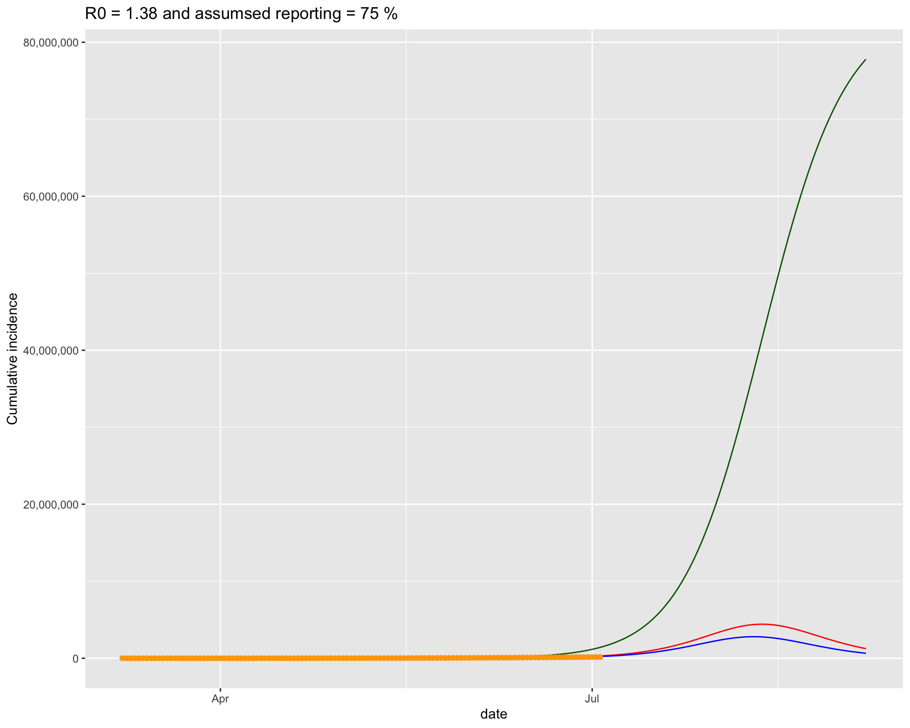
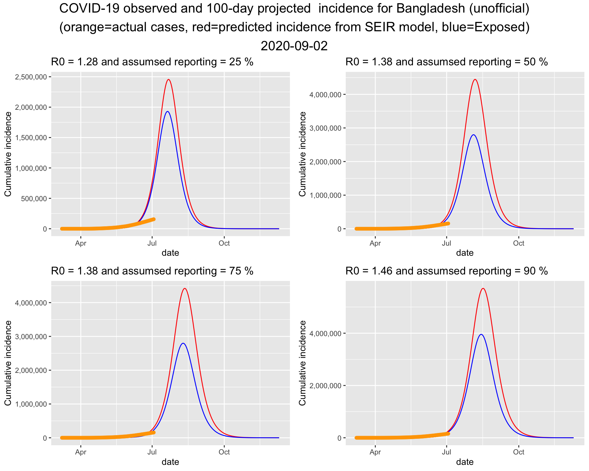
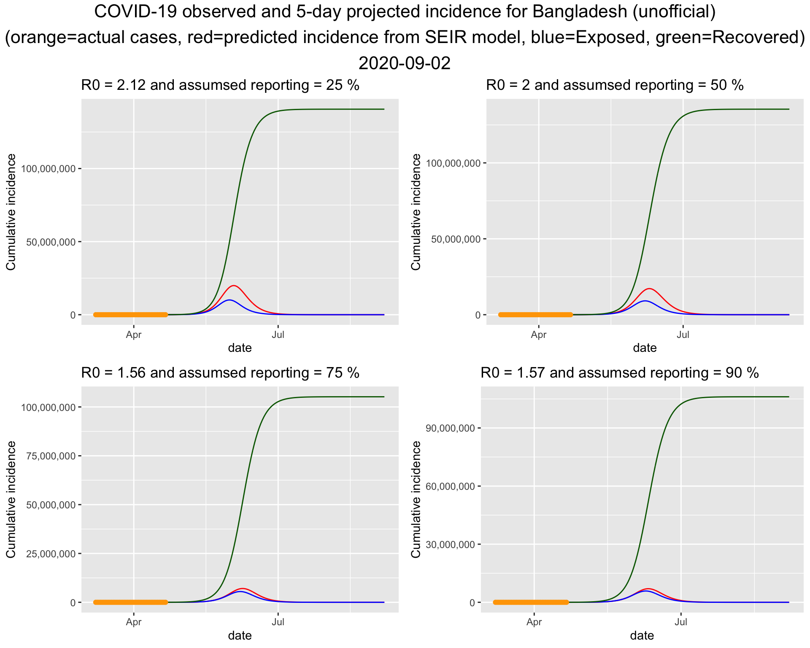
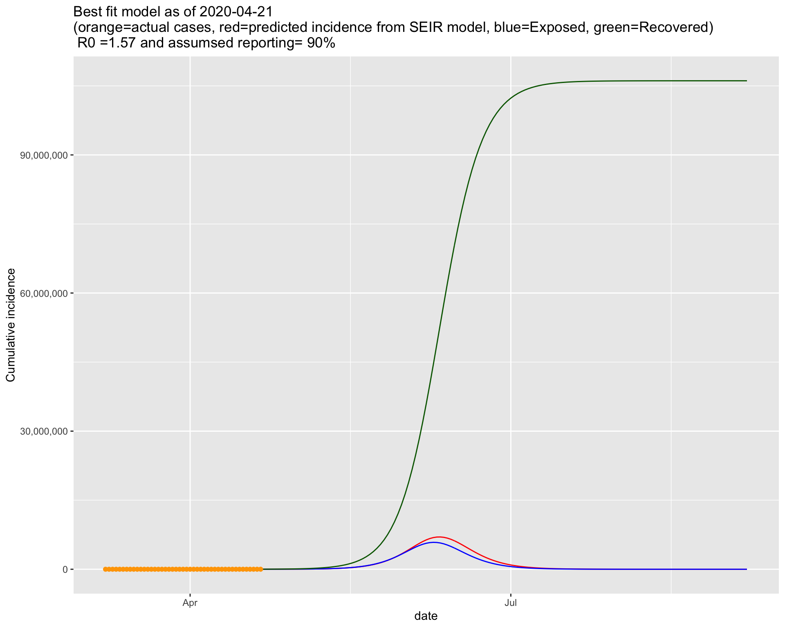
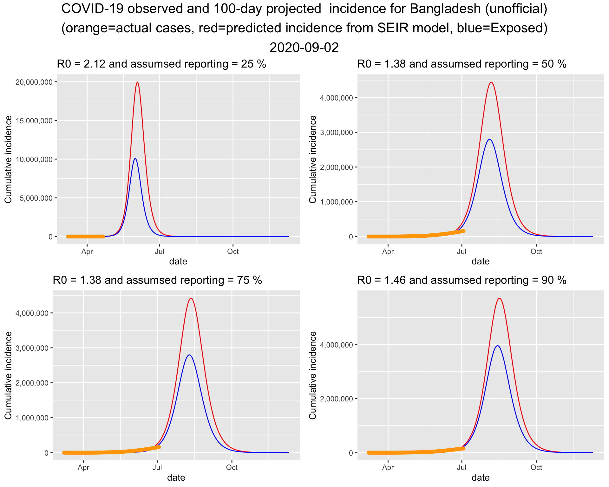

Report 4 Projections
Report last updated: 2020-06-16
In this udpate, second round of prjections (Run 2) have been added. Please scroll down to find the projections. As usual, the last two current values were not used for fitting the model. Also, the model is conservative/pessimistic i.e., it slightly overestimates new cases.
In addition to that, a new paramter to control the
run_datewas added to thefit_seir()function. See the code for more details.
4.1 Projection for Bangladesh (unofficial) Run1
Run date: 17 April 2020
This is a dynamic document and will be updated frequently. Please check back for latest projection. This projection is based on unofficial Bangladesh incidence data.
4.1.1 Methodology
This projection is based on an SEIR model. Here, the S stands for Susceptible, E stands for Exposed/infected but asymptomatic, I stands for Infected and symptomatic, and R stands for Recovered. N is the population size.
Assuming there is no births or deaths in a population, (known as a closed population), the model is formulated by the following differential equations.
\[ \begin{align} \frac{\partial S}{\partial t} & = -\frac{\beta I S}{N} \\ \frac{\partial E}{\partial t} &= \frac{\beta I S}{N} -\sigma E \\ \frac{\partial I}{\partial t} &= \sigma E - \gamma I \\ \frac{\partial R}{\partial t} &= \gamma I \end{align} \]
Here the parameters \(\beta\) controls the transmission rate, which is the product of contact rate and the probability of transmission given contact betwen S and E compartments. \(\sigma\) controls the transition from E to I, and \(\gamma\) controls the transition from I to R.
The reproduction rate, \(R_0\) can be approximated by \[R_0 = \frac{\beta}{\gamma}\] In plain language, \(R_0\) tells us how many people are infected from one patient. An \(R_0>1\) indicates the epidemic is at the grotwh phase. \(R_0<1\) means the epidemic is slowing or decaying.
Model was fitted using all but the last two day’s incidences to obtain the estimated \(\beta\) and \(\gamma\). The fitted model was used for prediction. This post was inspired by Churches (2020), where you will find some details on the computation.
4.1.2 Ascertainment Rate
Not all the cases are reported or tested. Usually a fraction of the actual cases are detected. This is known as ascertainment rate. We consider 25%, 50%, 75% amd 90% ascertainment rate when fitting the model.
Simply, the incidences are inflated by the inverse of the ascertainment rate.
Please let me know if you find any error in it. The code was adapted from Churches (2020)
library(deSolve)
library(grid)
library(gridExtra)##
## Attaching package: 'gridExtra'## The following object is masked from 'package:dplyr':
##
## combine######################################
## SIER Modeling -------
######################################
# Parameters
# beta = rate of expusore from susceptible infected contact
# sigma = rate at which exposed person becomes infected
# gamma = rate at which infected person recovers
# S = Initial susceptible population
# E = Initial exposed population
# I = Initial infected population
# R = Recovered population
fit_seir <- function(country_name='Bangladesh(unoff)',
N=170000000,
af=0.5, npast=2, nfuture=5,
run_date = today()){
# country = Country name
# N = population size of the country
# af = ascertainment factor, default = 0.5
# country = "Bangladesh(unoff)"
# npast = number of days in the past to exclude when fitting the model
# default is npast = 2
# nfuture = number of days in the future the algorithm to predict to
# default is nfuture=5
# run_date = sets the cutoff date so that the later runs do not overrite
# previous runs. Default is today()
SEIR <- function(time, state, parameters) {
par <- as.list(c(state, parameters))
with(par, {
dS <- -beta * I * S/N
dE <- beta * I * S/N - sigma * E
dI <- sigma * E - gamma * I
dR <- gamma * I
list(c(dS, dE, dI, dR))
})
}
# define a function to calculate the residual sum of squares
# (RSS), passing in parameters beta and gamma that are to be
# optimised for the best fit to the incidence data
RSS <- function(parameters) {
names(parameters) <- c("beta", "sigma", "gamma")
out <- ode(y = init, times = Day, func = SEIR, parms = parameters)
fit <- out[, 4]
sum((infected - fit)^2)
}
country = enquo(country_name)
df <- bd_unoff %>% filter(country == !!country, cum_cases>0, date <= run_date)
infected <- df %>% filter(date >= min(date), date <= today() - 1 - npast) %>%
pull(cum_cases)
R = 0; E=0; I = infected[1]; S = N - E - I - R
seir_start_date <- df %>% pull(date) %>% min()
# Ascertainment factor
infected = infected * 1/af
# Create an incrementing Day vector the same length as our
# cases vector
Day <- 1:(length(infected))
# now specify initial values for S, I and R
init <- c(S = S, E=E, I=I, R=R)
# now find the values of beta and gamma that give the
# smallest RSS, which represents the best fit to the data.
# Start with values of 0.5 for each, and constrain them to
# the interval 0 to 1.0
opt <- optim(c(.5, .5, .5), RSS, method = "L-BFGS-B",
lower = c(0.01,0.01,0.01), upper = c(.999, .999, .999),
control=list(maxit = 1000))
# check for convergence
opt_msg = opt$message
opt_par <- setNames(opt$par, c("beta", "sigma", "gamma"))
beta = opt_par["beta"]
gamma = opt_par["gamma"]
sigma = opt_par["sigma"]
R0 = as.numeric(beta/gamma)
# time in days for predictions
t <- 1:(as.integer(today() - seir_start_date) + nfuture)
# get the fitted values from our SEIR model
odefit = ode(y = init, times = t, func = SEIR, parms = opt_par)
fitted_cases <- data.frame(odefit)
# add a Date column and join the observed incidence data
fitted_cases <- fitted_cases %>%
mutate(date = seir_start_date + days(t - 1)) %>%
left_join(df %>% filter(cum_cases>0) %>% ungroup() %>%
select(date, cum_cases))
# Return
list(country=country_name, infected = infected,
opt_msg=opt_msg, opt_par = opt_par, R0=R0, opt_msg=opt_msg,
fitted_cases=fitted_cases, N=N, af=af)
}It turns out that the bottom left one fits the current data best. So lets put that figure on a bigger canvas.

4.1.3 Projection for the next 5 days
| Date | Actual daily cases | Projected daily cases | Actual cumulative cases | Projected cumulative cases | |
|---|---|---|---|---|---|
| 36 | 2020-04-12 | 139 | 142 | 621 | 840 |
| 37 | 2020-04-13 | 182 | 172 | 803 | 1012 |
| 38 | 2020-04-14 | 209 | 206 | 1012 | 1218 |
| 39 | 2020-04-15 | 219 | 248 | 1231 | 1466 |
| 40 | 2020-04-16 | 341 | 298 | 1572 | 1764 |
| 41 | 2020-04-17 | 266 | 359 | 1838 | 2123 |
| 42 | 2020-04-18 | NA | 433 | NA | 2556 |
| 43 | 2020-04-19 | NA | 521 | NA | 3077 |
| 44 | 2020-04-20 | NA | 626 | NA | 3703 |
| 45 | 2020-04-21 | NA | 754 | NA | 4457 |
4.1.4 Projection for 100 days into the future
Assuming the situation will remain like this including the interventions currently in place, the 100 day projection suggests that the the peak of the epidemic will be around the middle of June. The trajectory also suggests that the epidemic will end by end of July or early August.

4.2 Projection for Bangladesh (unofficial) Run 2
Run date: 21 April 2020
This is the second projection. For the initial project, please scroll up. The methodology is discussed above.

It turns out that the bottom right one fits the current data best. So lets put that figure on a bigger canvas. Please note that in Run 1, we used a similar \(R_0\) but a lower ascertainment rate. This time, a higher ascertainment rate is associated with a similar \(R_0\).

4.2.1 Projection for the next 5 days
| Date | Actual daily cases | Projected daily cases | Actual cumulative cases | Projected cumulative cases | |
|---|---|---|---|---|---|
| 38 | 2020-04-14 | 209 | 190 | 1012 | 1132 |
| 39 | 2020-04-15 | 219 | 228 | 1231 | 1360 |
| 40 | 2020-04-16 | 341 | 274 | 1572 | 1634 |
| 41 | 2020-04-17 | 266 | 329 | 1838 | 1963 |
| 42 | 2020-04-18 | 306 | 396 | 2144 | 2359 |
| 43 | 2020-04-19 | 312 | 475 | 2456 | 2834 |
| 44 | 2020-04-20 | 492 | 571 | 2948 | 3405 |
| 45 | 2020-04-21 | 434 | 686 | 3382 | 4091 |
| 46 | 2020-04-22 | NA | 825 | NA | 4916 |
| 47 | 2020-04-23 | NA | 990 | NA | 5906 |
| 48 | 2020-04-24 | NA | 1190 | NA | 7096 |
| 49 | 2020-04-25 | NA | 1429 | NA | 8525 |
4.2.2 Projection for 100 days into the future
Assuming the situation will remain like this including the interventions currently in place, the 100 day projection suggests that the the peak of the epidemic will be around the middle of June. The trajectory also suggests that the epidemic will end by end of July or early August.

References
Churches, Tim. 2020. “Tim Churches Health Data Science Blog: Analysing Covid-19 (2019-nCoV) Outbreak Data with R - Part 1.” https://timchurches.github.io/blog/posts/2020-02-18-analysing-covid-19-2019-ncov-outbreak-data-with-r-part-1/.